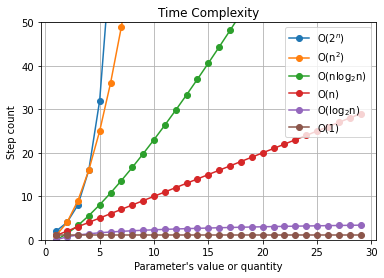

時間複雜度與空間複雜度
讓程式能夠以更有效率的方式達成目標
在介紹時間複雜度(Time Complexity)與空間複雜度(Space Complexity)的概念之前呢，應該先了解探討這兩個概念的目的，其實是想要了解一個處理程序(程式)它的處理效率(需要執行的步驟數量)跟需要消耗的資源(記憶體空間)，從這兩個角度來判斷這個處理程序究竟CP值高不高。下面就用幾個生活中的例子來說明時間複雜度與空間複雜度。
時間複雜度
雖然它的名字有「時間」，但是判斷的標準不是用一個程式執行所花的時間來當作判斷依據！就好比說同樣一段程式，一個用現在最新最快的電腦去執行，一個卻是用20年前的電腦去跑，可想而知用新電腦跑起來肯定是快上非常多，但實際上它們都是同樣一段程式，應該要有一樣的時間複雜度才對！評估時間複雜度看的是一段程式「參數的數量(或是大小)與需要執行的步驟數量之間的關係」，並且用英文字母O來表示(Big O Notation)。常常會聽到的時間複雜度有O(1), O(log2n), O(n), O(nlog2n), O(n2)以及O(2n)，n表示的是參數的數量或大小。讓我們來一一的跟生活中的例子對照對照吧。
O(1)
這個情況代表著輸入的參數不論有多少，程式需要執行的步驟數都不會因此改變。就像我們去逛書店想要買當月最暢銷的書，不論書店裡面有賣多少本書，我們進到店裡面之後，只要朝著「暢銷書籍」區走，然後拿起排名第一的那本書去結帳就完成任務了。
O(log2n)
這表示n的大小跟執行步驟數之間是以2為底的對數關係。這是什麼意思呢？例如烏龍派出所的阿兩的「倍倍儲蓄法」，第一天的存款是10塊的話，第二天就要變成20塊，第三天總共要有40塊，第四天就是80塊……，每一天的存款總額是前一天的2倍。這樣要存1000萬的話只需要21天就能夠存到了！這個21天(需要的步驟)跟1000萬(n值)之間的關係正好就是O(log2n)！(原來存錢這麼簡單的嗎(｡･∀･)ﾉﾞ
O(n)
相信看到這邊大家已經可以知道這代表著n值與步驟數是線性的關係。假如今晚我想來點肯德基的吮指雙雞套餐。當肯德基推出的套餐種類越多，我可能得在點餐頁面上滑的更久才能找到我想要吃得套餐。
最好的情況是吮指雙雞套餐就排在第一個，這樣就能夠直接下單；但萬一它排在最後一個，那就得再看過所有的套餐選項之後才能找到。而通常我們討論時間複雜度都是指最糟的情況
總共有的套餐數量(n)跟需要判斷是不是吮指雙雞套餐的次數之間正是O(n)的關係。
O(nlog2n)
某某國小正在舉行圍棋公開賽，同一組別中總共有n個人報名參加。為了產生冠軍，需要安排至少log2n回合的對弈(若計算結果有小數點的話就無條件進位)；而每一回合中，所有人都要參與比賽(若是單數個人參賽，那落單的人很幸運的就直接紀錄一勝)，因此每一回合需要對奕(n/2)次(也是一樣若有小數的話就無條件進位)。參加人數n總共需要比賽(n/2) x (log2n)次，以大O表示法來說就是O(nlog2n)。
「雖然計算的結果是(nlog2n)/2，但是大O表示法會省略計算結果中的係數還有影響程度較小的項(後面會再提)，因此最後是以O(nlog2n)來表示」
O(n2)
想像一下手中有一疊共n張的撲克牌，想要把它按照花色跟數字大小給排好。那麼我們可以從第一張開始，接著拿出第二張，然後跟第一張比，如果比它小就放到它前面，比它大就放到後面。接著拿起第三張，跟前兩張比大小，並且放到適當的位置，直到第n張為止。有n張撲克牌所以需要拿出n-1次(n-1回合)；第i回合需要把拿出的牌跟i張牌比較，所以最糟的情況需要1+2+…+(n-2)+(n-1)個步驟，也就是n(n-1)/2=n2/2-n/2次，大O表示法為O(n2)。
O(2n)
再次用「倍倍儲蓄法」為例。第一天總共有10塊的存款，第二天有20塊，第三天有40塊，第四天有80塊…，每n天的存款有10*2(n-1)塊，也就是5*2n。大O表示法會省略係數以及影響較小的項，因此第n天與存款的關係就會等於O(2n)。
空間複雜度
跟時間複雜度的分析方式類似，只是把「處理步驟數量」換成「需要的記憶體數量」，也就是說，空間複雜度討論的是「參數的大小(或數量)與所需要的記憶體數之間的關係」，這邊就簡單帶過囉～～
不同的O(x)之間的影響權重
前面有提到各種時間複雜度的大O表示，像是O(1), O(n)…等等。現在假如有一個程式它執行的步驟數量可以寫成3*2n-n2+4(nlog2n)+3n-(log2n)+4，那最後的大O表示法應該怎麼寫呢？首先我們把係數去掉，於是得到：
2n+n2+(nlog2n)+n+(log2n)+1
接著就是要比較每一項之間到底是哪一個會最大的影響所需的步驟數。讓我們來看個圖：

上圖呈現的是在不同的時間複雜度之下，參數值或數量與處理步驟數量之間的關係圖，可以看到在同樣的n值之下，所得到的步驟數量是O(2n) > O(n2) > O(nlog2n) > O(n) > O(log2n) > O(1)，也就是說決定一個程式步驟數最關鍵的是O(2n)這一項，它對於整個程式的步驟數影響的權重最大。由於大O表示法只會呈現影響權重最大的那一項，因此在表示2n+n2+(nlog2n)+n+(log2n)+1的結果時，會得到O(2n)。
小結
時間與空間複雜度雖然乍聽之下很玄幻，但它的目的其實是為了從「步驟數量」與「消耗的記憶體大小」兩個面向來判別一個處理程序是不是有很高的CP值，畢竟一個程式執行起來萬一需要太多時間或是太吃記憶體，可能還沒跑完就會先被使用者給刪掉了。相信有了時間/空間複雜度的概念之後，未來在寫程式的時候除了要能達到目的之外，還會特別注意效能囉！

國立交通大學材料系奈米科技碩士班畢業(現在應該稱國立陽明交通大學ʕ •ᴥ•ʔ)。雖然非資工相關科系畢業，但本著對資工領域的興趣而開始自學相關知識，目前則專攻網頁相關知識，如HTML5、CSS3、JavaScript、Node.js。以跨領域學習者的角度來介紹資工領域相關的知識，除了加深自己對相關知識的理解，也期望同是跨領域學習的朋友們因為瀏覽我的文章而有更多不一樣的觀點可以參考。